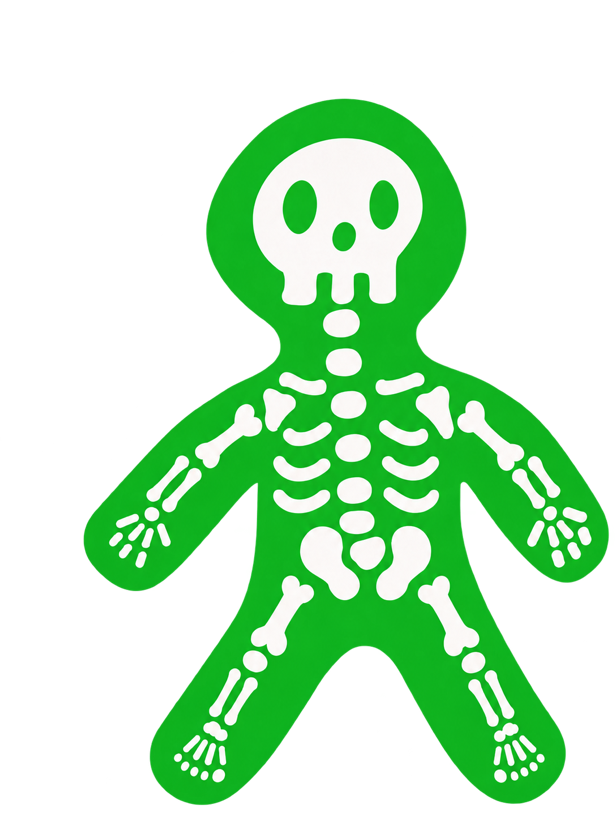

骨折
給付比例表
依身體部位由上至下大分類
（資料來源：附表二 骨折別表）
1
頭面部
»»
頭蓋骨
60%
鼻骨、眶骨
（含顴骨）
12%
下顎
（齒槽醫療除外）
20%
2
上肢
»»
臂骨
40%
橈骨或尺骨
30%
橈骨與尺骨
40%
腕骨
（一手或雙手）
40%
掌骨
12%
指骨
3%

3
軀幹與骨盆
»»
鎖骨
30%
肩胛骨
35%
肋骨
20%
椎骨
（包括胸椎、腰椎及尾骨）
40%
骨盤
（包括腸骨、恥骨、坐骨、薦骨）
40%
4
下肢
»»
大腿骨頸
80%
股骨
60%
膝蓋骨
30%
脛骨或腓骨
40%
脛骨及腓骨
60%
踝骨
（一足或雙足）
40%
蹠骨
12%
趾骨
3%
※
以上比例僅適用「完全骨折」。
不完全骨折按完全骨折的
½
給付；骨骼龜裂按
¼
給付。
※
同一意外傷害事故僅給付一次；若致成二項以上骨折，
僅就給付金額最高的一項
給付意外傷害骨折保險金。
※
意外傷害骨折保險金 ＝
保險金額 × 上列給付比例
。資料來源：富邦人壽溢起馬拉松傷害保險（AJK）條款附表二骨折別表（1151001 起適用），實際以保單條款為準。